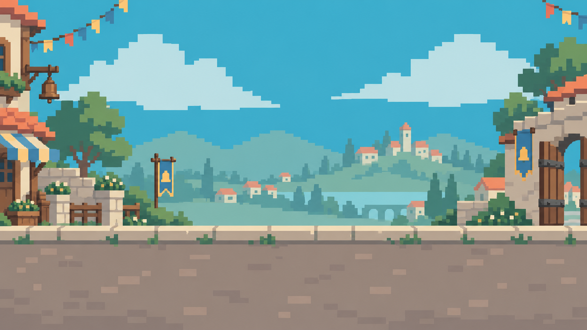
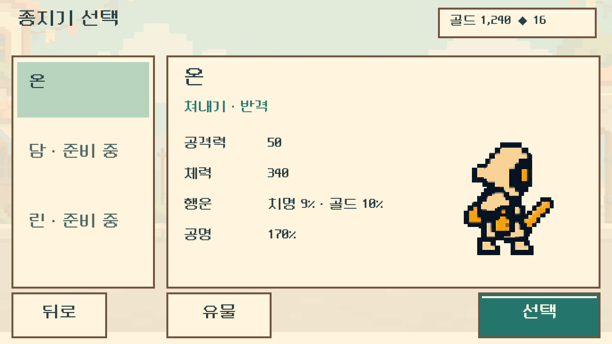
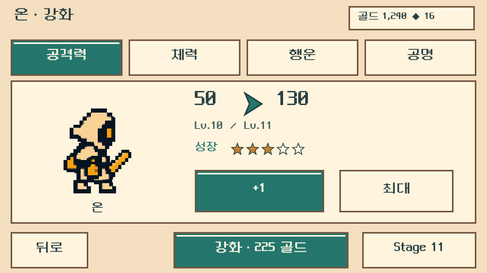
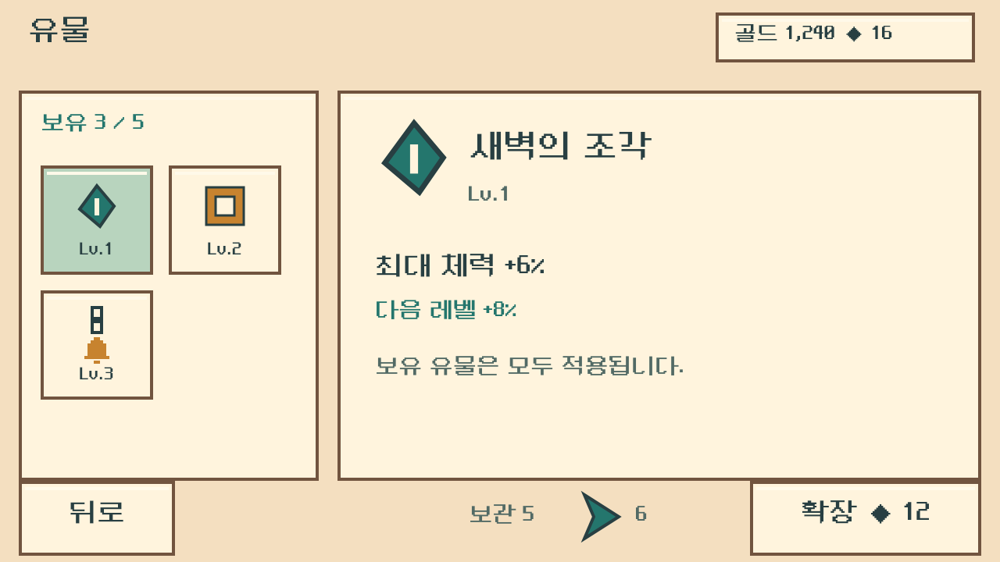
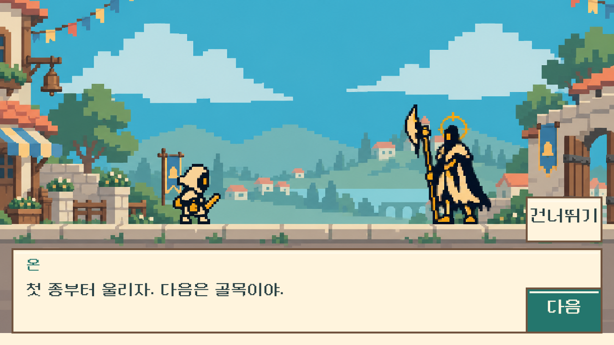
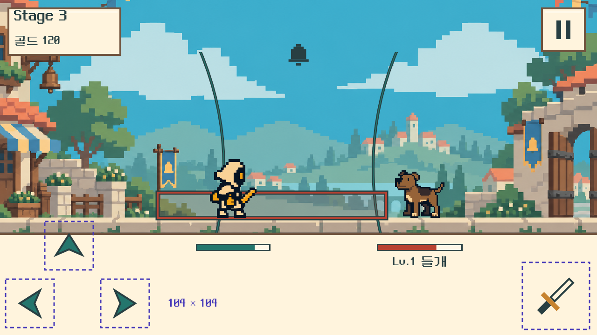
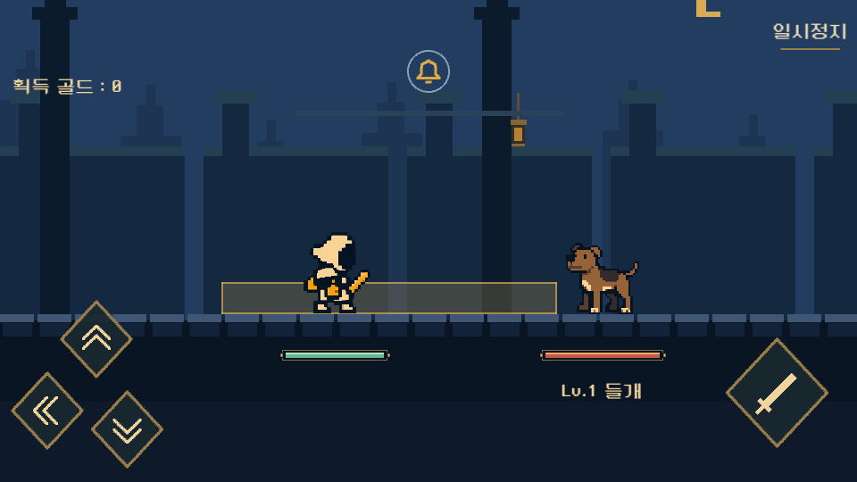

시작의 세 문장
오늘은 마을의 종 축제다.
갑작스러운 돌풍에 종과 준비 장치가 엉키고, 동물들도 놀라 달아났다.
온은 소동을 정리하고 마을의 다섯 종을 울리러 나섰다.
축제 전에, 다섯 종
축제 아침, 돌풍이 마을을 한바탕 뒤집었다. 온은 소동을 정리하고 축제를 시작할 다섯 종을 울리러 간다.

01 · STORY
사건은 축제 아침의 돌풍 하나입니다. 엉킨 장치를 멈추고 놀란 동물들을 진정시키며, 성문부터 종탑까지 길을 엽니다.
오늘은 마을의 종 축제다.
갑작스러운 돌풍에 종과 준비 장치가 엉키고, 동물들도 놀라 달아났다.
온은 소동을 정리하고 마을의 다섯 종을 울리러 나섰다.
마지막 종소리에 마을의 다섯 종이 함께 울렸다.
장치들은 제자리를 찾고, 주민들은 축제 길로 나왔다.
온도 검을 내려놓고 첫 행렬에 끼었다.
기존 후드, 검, 작은 체형과 절제된 움직임을 이어갑니다. 온은 눈앞의 일을 해결하고 짧게 안도하는 종지기입니다. 담과 린은 선택 인물이며 각자의 말투로 마지막 응답만 바꿉니다.
패배하면 “잠깐 쉬고 다시 가자.”라는 한 줄과 함께 등불이 켜진 쉼터로 돌아갑니다. 기계는 멈추고, 동물은 숨을 고른 뒤 물러납니다. 전투의 타이밍과 도전성은 유지합니다.
02 · FIVE BELLS
구역 카드의 색 띠는 배경의 색·덩어리 배치 방향입니다. 실제 배경 콘셉트 이미지는 성문길부터 제작했습니다. 21–50 스테이지는 장기 서사·아트 계획이며 구현 완료 구간이 아닙니다.
성문 앞 소동을 정리하고 첫 종을 울려 마을로 들어가자.
낮은 풀밭과 밝은 돌길, 천막을 접는 작은 가판대, 멀리 보이는 성벽. 성문은 9→10 이동 때 지면 위 구조물로 등장한다.
성문 종지기끈이 빗장에 걸렸군요. 이제 열립니다.
온첫 종부터 울리자. 다음은 골목이야.
장병기를 내려놓고 멈춘다. 대사가 끝나면 엉킨 끈이 풀리고 문이 열린다. 사람이나 사람의 혼이 든 갑옷은 아니다.
온이 첫 종을 울린다. 성문 깃발이 펼쳐지고 열린 문 너머로 물길 골목이 보인다.
엉킨 줄과 멈춘 장치를 정리하고 골목의 두 번째 종을 울리자.
얕고 맑은 수로를 따라 낮은 집과 작은 다리가 이어진다. 창문에는 꽃화분, 집 사이에는 빨랫줄과 축제 깃발이 걸려 있다.
물길 관리인형줄은 제자리입니다. 물길도 다시 열렸어요.
온두 번째 종을 울리고 공방으로 가자.
수문 조작을 멈추고 엉킨 줄을 푼다. 대사 뒤 수로가 제 속도로 흐르고 짧은 다리가 열린다.
두 번째 종이 울리면 골목의 깃발이 제자리에 펴지고 주민들이 창문을 연다.
끈에 걸린 작업 장치를 멈추고 공방의 세 번째 종을 울리자.
큰 창으로 빛이 드는 공방. 황동 톱니와 나무 작업대 사이에 포장 상자와 완성된 축제 장식이 놓여 있다.
공방 지휘기태엽에 감긴 끈이 풀렸습니다.
온세 번째 종을 울리자. 다음은 정원이야.
중앙 축이 멈추고 태엽에 감긴 끈이 느슨해진다. 왕관·왕좌·사람의 얼굴 대신 공방 장치로 읽혀야 한다.
세 번째 종을 울리면 작업등이 켜지고 완성된 장식 상자가 정원 쪽으로 지나간다.
흩어진 장식 사이의 길을 정리하고 정원의 네 번째 종을 울리자.
낮은 생울타리와 밝은 유리온실, 작은 풍차와 바람종이 있는 정원. 옛 성당형 아치는 온실 틀과 정원 종틀로 재해석한다.
정원 관리장화분도 깃발도, 이제 제자리에 있네요.
온정원 종도 울리자. 마지막은 종탑이야.
도구를 땅에 세우고 정지한다. 잘못 걸린 깃발이 풀리며 종탑으로 가는 아치길이 드러난다.
네 번째 종의 울림에 작은 바람종들이 흔들린다. 멀리 마지막 종탑이 또렷하게 보인다.
종탑의 마지막 소동을 정리하고 다섯 번째 종으로 축제를 시작하자.
마을 지붕과 지나온 길이 내려다보이는 열린 종탑. 밝은 목재 발판과 황동 종, 큰 창 사이로 푸른 하늘이 보인다.
축제 지휘인형엉킨 줄이 풀렸습니다. 종을 울릴 수 있어요.
온모두 기다리겠다. 이제 축제를 시작하자.
종채를 내려놓고 멈춘다. 엉킨 줄이 풀리면 마지막 종이 온전히 드러난다. 비어 있는 무덤이나 희생의 자리는 없다.
유물 선택과 기존 완주 저장을 마친 뒤 마지막 종을 울리는 엔딩으로 이어진다. 먼저 울린 네 구역의 종도 함께 응답한다.
03 · SCREEN STUDIES
현재 캐릭터 스프라이트를 그대로 놓고 배경과 패널을 바꾼 정적 시안입니다. 아래 탭으로 화면을 비교하고 이미지를 누르면 원본 크기로 볼 수 있습니다.






04 · ART & UI
#FFF4DD#71543F#283F42#24766D#B84232#B8D4BE하늘 → 먼 마을 → 성벽·나무 → 깃발·종 → 돌길 순서로 나눕니다. 적 처치 뒤에는 플레이어 x 위치를 유지하고 땅과 배경이 움직입니다. 가까운 층일수록 빠르게 움직이는 기존 패럴랙스 구조를 이어갑니다.
큰 장식은 화면 양옆에 두고, 캐릭터와 공격 예고가 겹치는 중앙은 단순하게 남깁니다. 종·기계의 황동과 온의 후드가 화면 전체에서 연결되도록 합니다.
스테이지·재화·성장 수치·필요한 행동과 짧은 대사만 남깁니다. 위험 신호에는 설명 문장을 붙이지 않습니다. 배경의 꽃이나 깃발이 공격 예고와 같은 모양으로 움직이지 않도록 합니다.
크림 패널 위 먹색 글자 대비는 약 10.23:1, 산호색과 청록색은 각각 약 4.98:1·4.95:1입니다. 실제 배경 위에는 진한 외곽선과 형태 차이를 함께 사용합니다.
| 요소 | 이번 개정안 | 다음 제작에서 확인할 것 |
|---|---|---|
| 캐릭터 | 온의 원형·무기·의상 보존 | 밝은 배경에서 모든 모션의 실루엣 |
| 적의 패배 | 기계 정지 / 동물 진정·퇴장 | 동물에 몸 분해 연출이 남지 않는지 |
| 보스 대사 | 하단 한 줄, 다음·건너뛰기 | 흰 피격 플래시·데미지 팝업을 정리한 뒤 전환 |
| 유물 | 보유 자동 적용·중복 레벨업·보관함 확장 | 기존 보상·비용과 일치, 장착 버튼 추가 없음 |
| 배경 | 성문길 낮 풍경과 5구역 색·구조 방향 | 도트 격자 통일·레이어 분리·반복 경계 제작 |
05 · REVIEW & HANDOFF
이 문서는 기획과 시안을 검토하기 위한 제안입니다. Unity 씬·프리팹·전투 수치·저장 데이터에는 이번 변경을 적용하지 않았습니다. 생성 배경은 아직 단일 이미지이며 타일셋·애니메이션·레이어 제작 완료를 뜻하지 않습니다.
배경은 내장 ImageGen으로 생성·수정했고, UI 시안은 기존 캐릭터와 코드 기반 도형으로 합성했습니다. 화면 구성 검토와 정적 파일 검증을 진행하며, Unity 실행 검증은 이 작업 범위에 포함하지 않습니다.